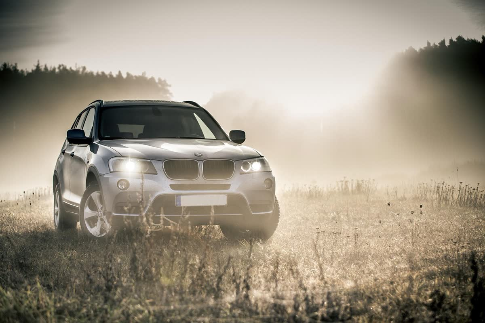
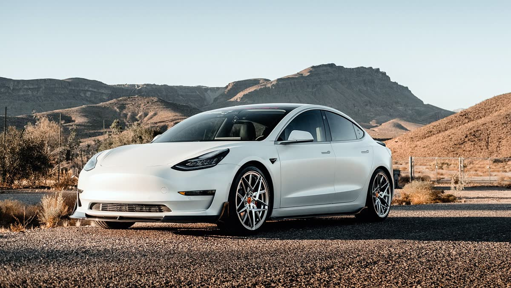

Kaporta ve mekanikte aracınız ilgili ellerde
Seyhan'da kaza onarımından kaskolu hasar işlerine, kaportadan mekanik bakıma kadar aracınızın sorunlarıyla yakından ilgileniyoruz. Süreci baştan sona anlatır, aracınızı söz verdiğimiz şekilde teslim ederiz.
★★★★★ 4.4 · 229 Google yorumu

